- 6 degrees of freedom
- Dual on-axis absolute encoders — no homing required
- End-effector repeatability ≈ ±0.75 mm
- 1 m reach, 5 kg payload
- Moteus R4 controllers over CAN-FD; ROS 2 + MoveIt on a Pi 5


Selected work
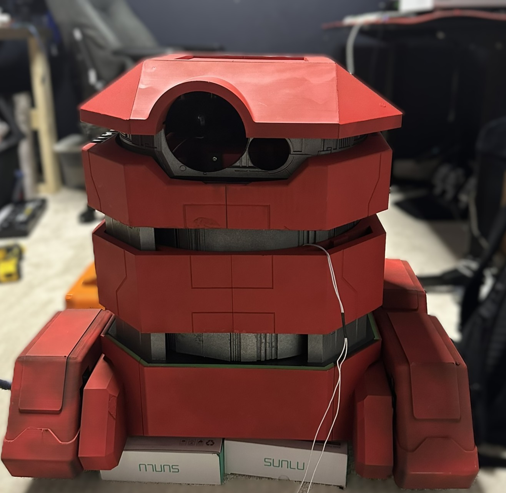
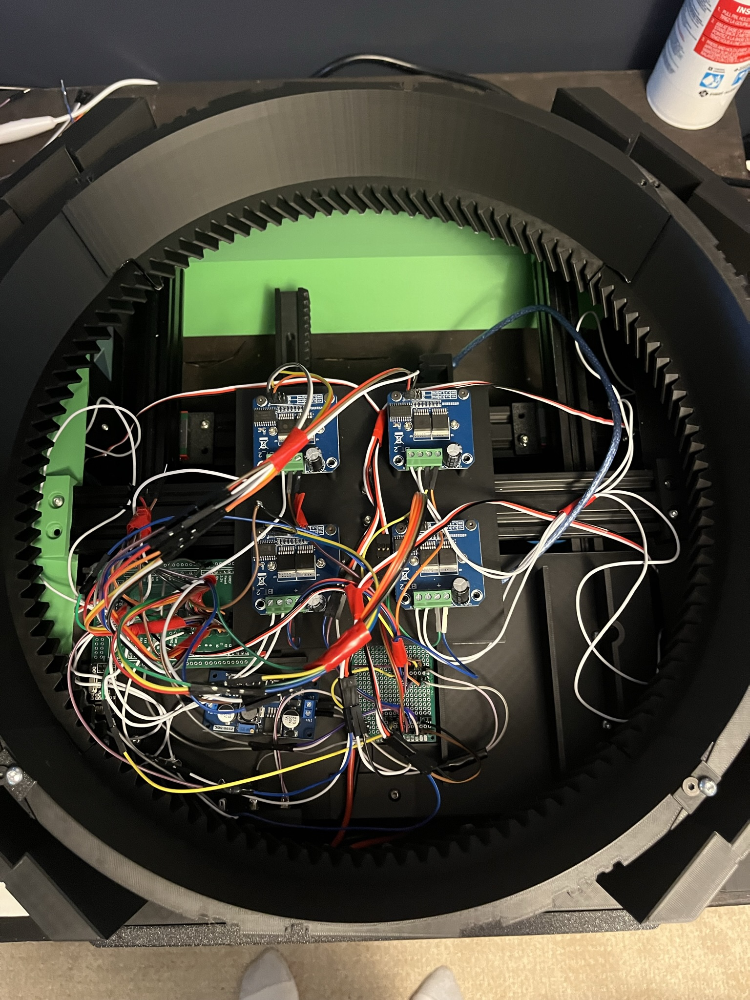
3D-printed strain wave gearbox with an encoder inside the flexspline.


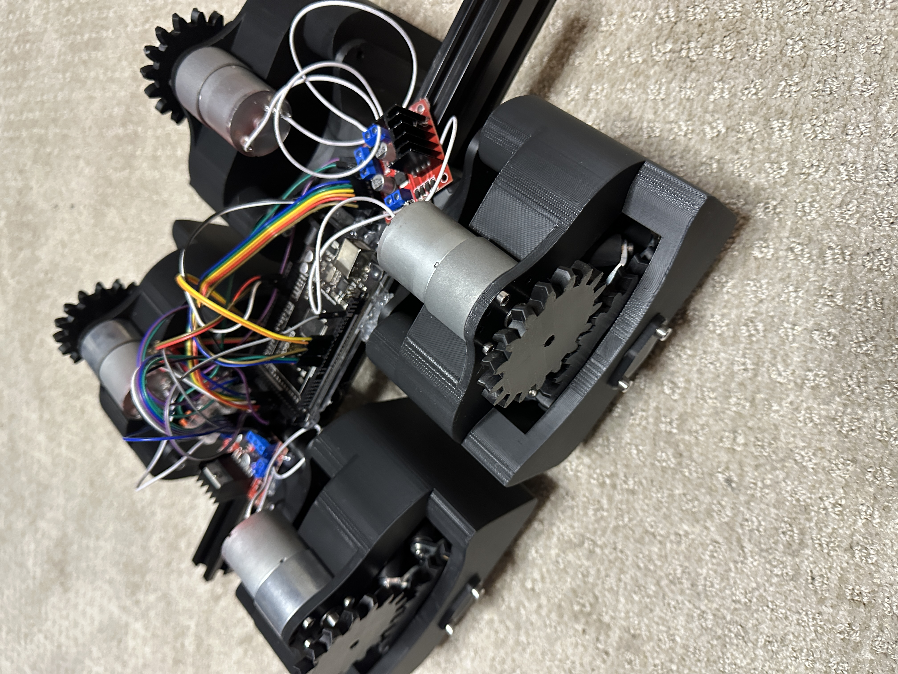
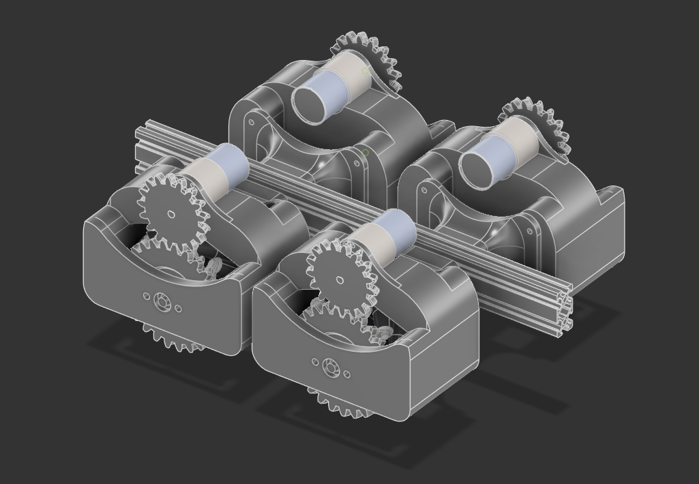
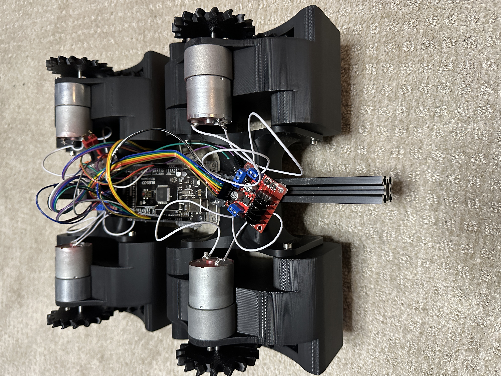
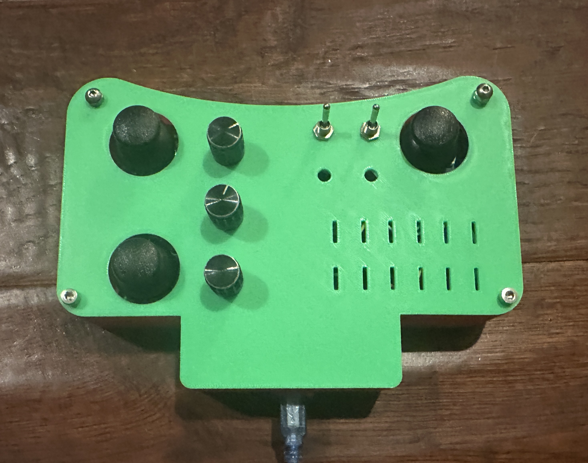
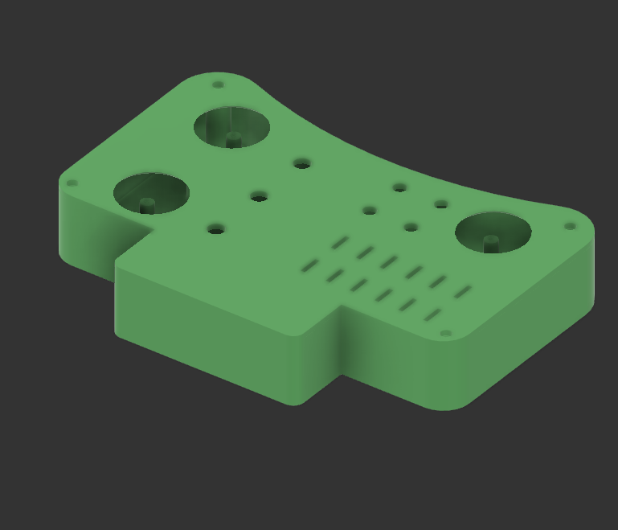
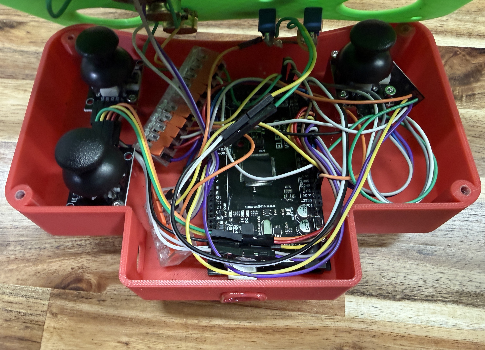
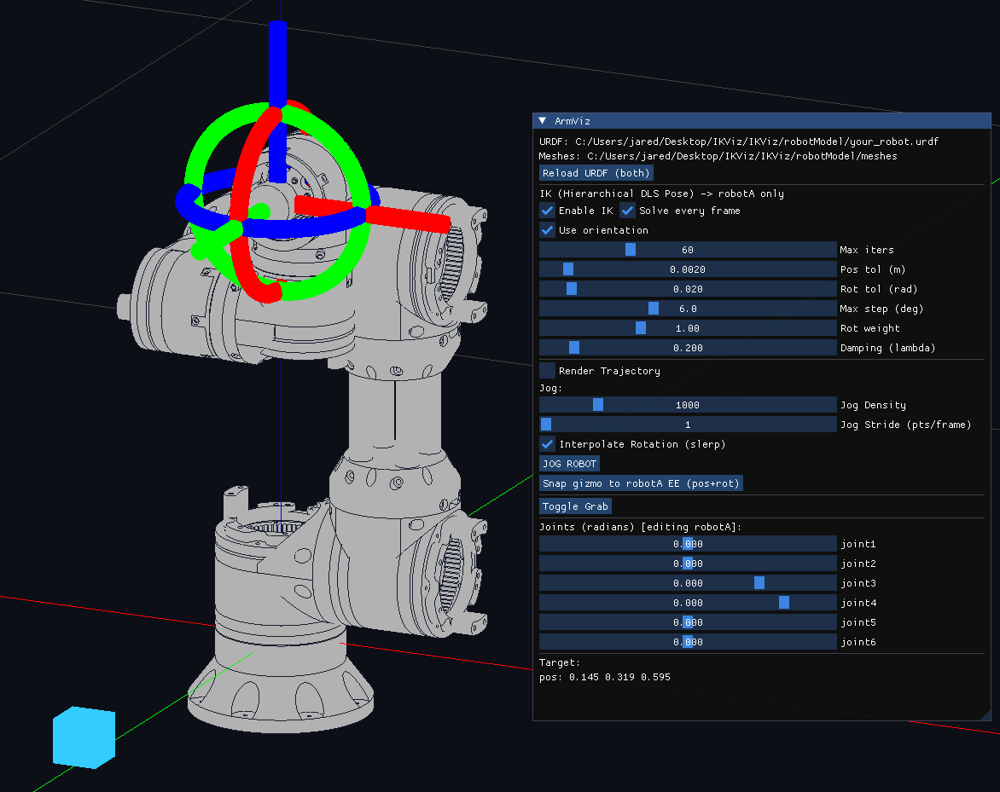
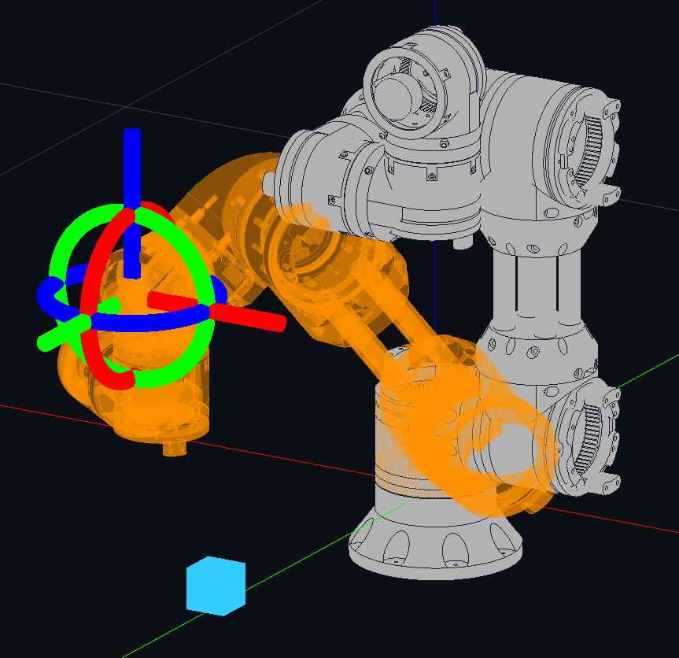
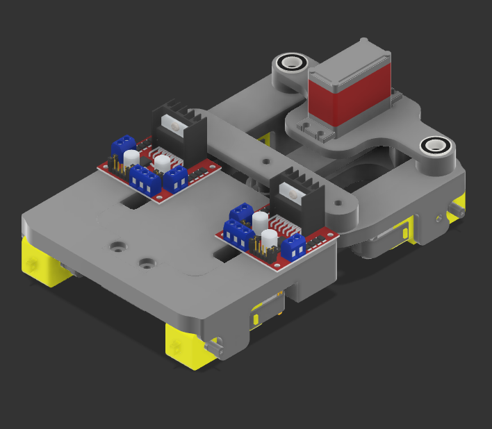
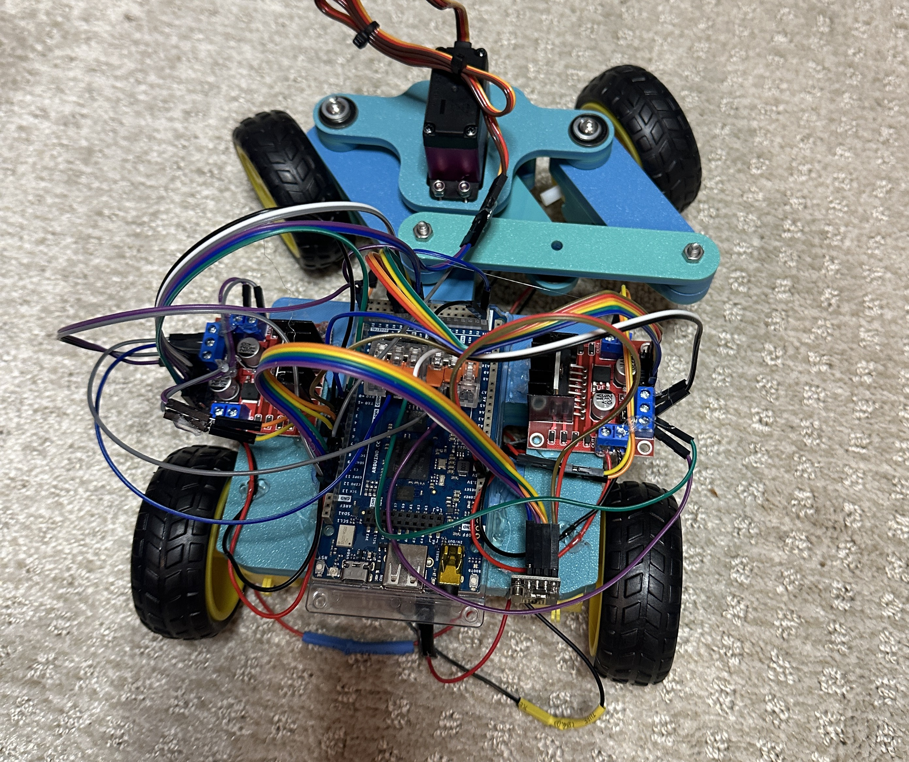

A physics demonstration that launches a ball perfectly vertically.


Photographs
Click any photo to enlarge.
Contact
If you want to talk about a project, robotics, or opportunities, feel free to reach out.